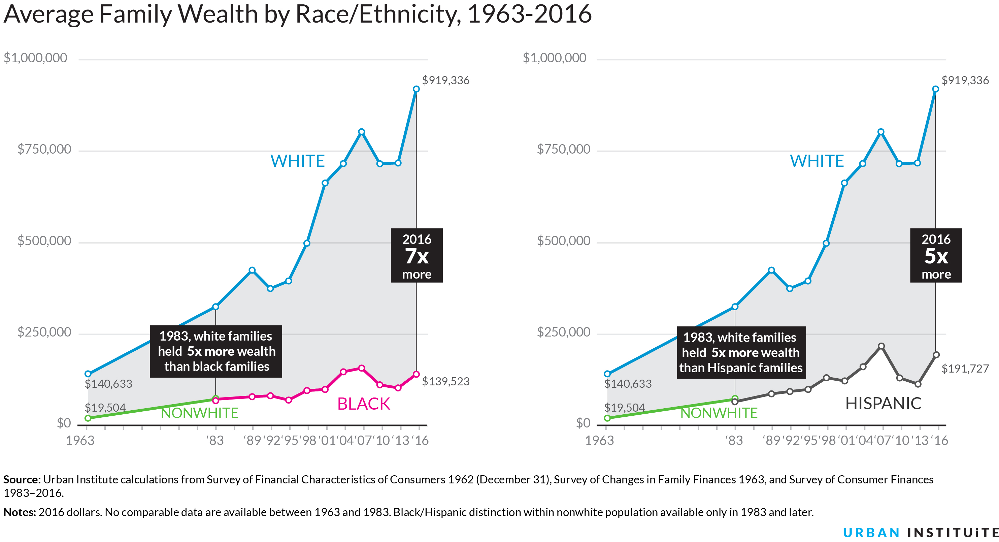
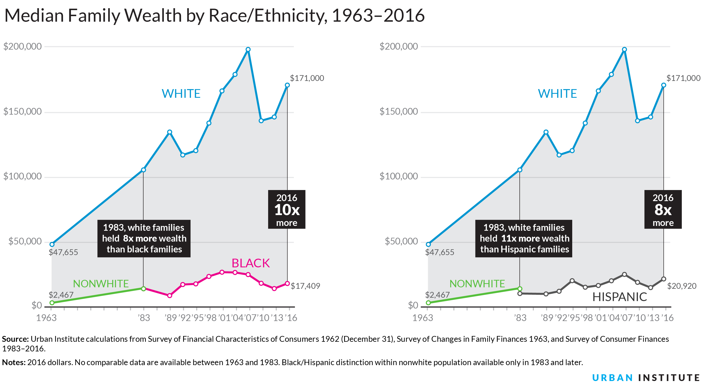

Median wealth by race and ethnicity is lower than average wealth, but the trends stay the same. Both measures are important because average wealth indicates how a group is prospering as a whole relative to other groups, while median wealth shows how the “typical” family is doing.
Source: Urban Institute calculations from Survey of Financial Characteristics of Consumers 1962 (December 31), Survey of Changes in Family Finances 1963, and Survey of Consumer Finances 1983–2016.
Notes: 2016 dollars. No comparable data are available between 1963 and 1983. Black/Hispanic distinction within nonwhite population available only in 1983 and later.